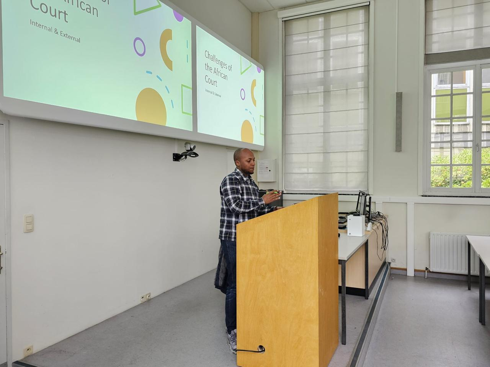

University of Minnesota Press, 2025
Fluctuating standards of proof at the African Court: a case for principled flexibilityAfrican Human Rights Yearbook, 2023
Youth mobilities and belonging in and out of a Kenyan urban 'hood'Rise Africa Discussion Series, 2021
Advancing the Right to Demonstrate in Kenya through Negotiated ManagementPalgrave Macmillan (Book Chapter), 2020
Corruption and the right to vote in free and fair elections in Africa: Is the will of the people in auction?African Human Rights Yearbook 375-399., 2018
Slum Upgrading in Kenya: A Double-Edged Sword for the Right to Adequate HousingLaw Society of Kenya Journal., 2017
VerfBlog, 2025
State-sanctioned human rights violation in Kenya: Countering repression with resistanceAfricLaw, 2025
Re-imagining Standards of Fairness in Open Source InvestigationsOpinio Juris, 2023
How long is (not) too long before filing an application at African Court? Evidentiary Challenges for incarcerated applicantsBlog Post, 2022
Applying an Evidentiary Lens to the Conflict in Ethiopia: Issues Arising from Investigative MandatesBlog Post, 2022
Arresting Corruption in Africa: Role of the YouthInstitute for Security Studies (Policy Brief), 2018
Beyond Rhetoric - Engaging Africa's Youth in Democratic GovernanceInstitute for Security Studies, 2017
The Standard, 16 Aug 2025
How to investigate torture cases and deaths under police custodyThe Standard, 28 June 2025
African Court did not say we postpone electionsDaily Nation, 28 July 2021
Fight Coronavirus but respect human rightsThe Standard, 31 May 2020
Care, lest BBI tampers with graft warDaily Nation, 28 Jan 2020
DCI and EACC have shared mandate to investigate corruptionThe Standard, 27 March 2019
Judiciary at fault to issue pre-trial detention ordersThe Standard, 27 Feb 2019
It's duty of State to protect right of assembly and demonstrationDaily Nation, 18 May 2016
Who is really benefiting from EPZs in KenyaBusiness Daily Africa, 4 Jan 2012
The right to life versus the right to strikeBusiness Daily Africa, 14 Dec 2011
Women should demand gender parityBusiness Daily Newspaper, 23 Nov 2011